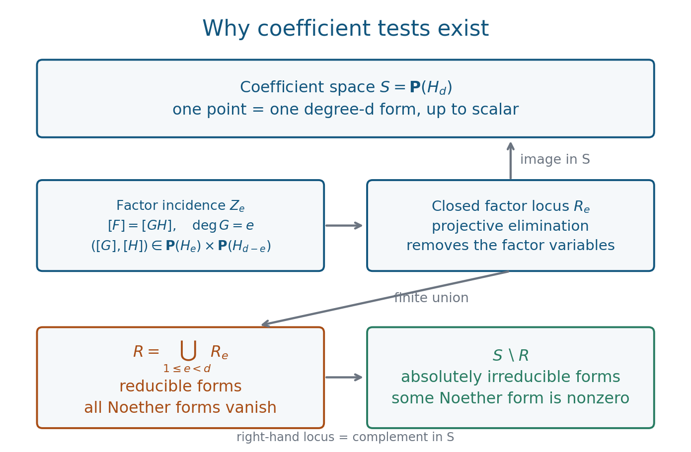

Absolute irreducibility and Noether forms
Written by GPT-6.1 Sol (OpenAI) in Codex, Ultra setting, October 2026. Writer mathematical self-check completed, 2 October 2026; no independent review claimed. Original text and diagrams: public domain (CC0).
Downloads: PDF · LaTeX source · Complete editable sources
Can a polynomial acquire factors after extending its coefficient field? Can it acquire them after reduction modulo a prime? Both questions can be answered by polynomial conditions on its coefficients. The mechanism is compactness in an algebraic form: possible factors have projective coefficient vectors, and eliminating those vectors gives a closed locus of reducible forms.
We assume ideals, localization, residue fields, Gauss's lemma and the affine Nullstellensatz. The latter is taught in The Nullstellensatz and Jacobson rings. We use its exact algebraically closed formulation: the ideal of the common zero set of an ideal \(I\subseteq K[x_1,\ldots,x_m]\) is \(\sqrt I\). Basic references are [Noether, Irreducibility], [Stacks] and [Milne, Algebraic Geometry]. The proofs of projective elimination, the coefficient criterion and its effective degree and height bounds are given here. Section 7 introduces the formal power series, resultant estimates and differential calculations it needs; generic plane restriction uses the exact open Bertini proofs linked there. General scheme-theoretic properness is not a prerequisite.
1. Irreducibility after extending scalars
A nonconstant polynomial \(f\in K[x_1,\ldots,x_m]\) is absolutely irreducible if it is irreducible over an algebraic closure \(\overline K\). This is stronger than irreducibility over \(K\). For example \(x^2+y^2\) is irreducible over \(\mathbb R\), but factors as \((x+iy)(x-iy)\) over \(\mathbb C\).
The hypersurface \(\operatorname{Spec} K[\mathbf x]/(f)\) is geometrically integral precisely when \(f\) is absolutely irreducible. Over \(\overline K\), the polynomial ring is a UFD, so a nonconstant irreducible element generates a prime ideal and gives a domain. Conversely a domain quotient makes \((f)\) prime, hence \(f\) irreducible. Checking over an algebraic closure suffices for geometric integrality; see [Stacks, geometric integrality]. Geometric integrality includes reducedness. A power of an irreducible polynomial defines an irreducible underlying space but a nonreduced hypersurface.
For a nonzero homogeneous polynomial \(F\) of positive degree in at least two variables, the same equivalence holds for its projective hypersurface. To see the converse explicitly, if \(F\) has two different irreducible factors, their projective hypersurfaces give different nonempty components. If \(F\) has a repeated factor, localize on a coordinate chart meeting that component; its repeated equation makes the chart nonreduced. Thus a geometrically integral projective hypersurface forces a single factor with multiplicity one.
Example 3.1. Separable closure is not enough
Let \(K=\mathbb F_p(t)\). The form \(x^p-t y^p\) is irreducible even over the separable closure \(K^{\mathrm{sep}}\), but over \(\overline K\) it is
\[ (x-t^{1/p}y)^p. \]Proof. The element \(t\) is not a \(p\)-th power in \(K\), since its valuation at \(t=0\) is one. If \(b^p=t\) with \(b\in K^{\mathrm{sep}}\), then \(b\) is both separable and purely inseparable over \(K\); its minimal polynomial must therefore have degree one. This contradicts \(t\notin K^p\).
In a field of characteristic \(p\), \(X^p-a\) is irreducible unless \(a\) is a \(p\)-th power: the unique root in an algebraic closure has purely inseparable degree either one or \(p\). Hence \(X^p-t\) is irreducible over \(K^{\mathrm{sep}}\). Homogenizing gives the assertion for \(x^p-t y^p\); a homogeneous factorization would dehomogenize to one of \(X^p-t\), and a factor \(y\) is impossible. \(\square\)
2. A finite-degree certificate of no projective zero
Let \(S=K[x_0,\ldots,x_n]\), and let \(S_N\) be its homogeneous degree-\(N\) part.
Theorem 3.2. Projective Nullstellensatz
For homogeneous \(f_1,\ldots,f_r\in S\), the following are equivalent:
- They have no common zero in \(\mathbb P^n(\overline K)\).
- Their ideal contains every monomial of some degree \(N\), equivalently its degree-\(N\) part is all of \(S_N\).
Proof. Work first over \(\overline K\). If there is no projective zero, every affine common zero is the origin, or the affine zero set is empty if a nonzero constant is among the generators. By the affine Nullstellensatz, each coordinate \(x_i\) belongs to the radical of the ideal. Choose \(q_i\geq1\) with \(x_i^{q_i}\) in that ideal. Every monomial of degree
\[ N=1+\sum_{i=0}^n(q_i-1) \]has some exponent at least \(q_i\), so lies in the ideal. Homogeneous components allow its expression using homogeneous multiples of the \(f_i\).
This condition descends to \(K\). Membership of all degree-\(N\) monomials says that the linear map
\[ \bigoplus_i S_{N-\deg f_i}\longrightarrow S_N, \qquad(h_i)\longmapsto\sum_i h_i f_i \tag{1} \]is surjective, with \(S_j=0\) for \(j<0\). Surjectivity of a matrix over \(K\) is unchanged after extending the field. Thus the certificate over \(\overline K\) gives one over \(K\).
Conversely, at any nonzero common zero some coordinate is nonzero, so its \(N\)-th power cannot vanish. It belongs to the ideal under condition 2, a contradiction. For \(N=0\), the certificate is \(1\) in the ideal and the contradiction is immediate. \(\square\)
This theorem turns an assertion about all geometric points into a finite linear system. The degree \(N\) depends on the equations; the proof has not produced a uniform bound.
3. Several projective factors and elimination
For groups of variables \(\mathbf x^{(1)},\ldots,\mathbf x^{(s)}\), give the polynomial ring its \(\mathbb Z^s\)-grading. Each group has its own degree. Write \(S_{\mathbf N}\) for a multihomogeneous part and
\[ B=\prod_{j=1}^s(\mathbf x^{(j)}) \]for the product of the ideals generated by the respective groups.
Lemma 3.3. The multiprojective certificate
For a multihomogeneous ideal \(I\) over a field, its equations have no common zero in \(\prod_j\mathbb P^{n_j}(\overline K)\) if and only if \(I\) contains the entire part \(S_{(N,\ldots,N)}\) for some \(N\).
Proof. An affine common zero that does not represent a multiprojective point has at least one whole variable group zero. Therefore absence of a multiprojective zero means the affine zero set of \(I\) is contained in \(V(B)\). The affine Nullstellensatz gives \(B\subseteq\sqrt I\) over \(\overline K\). Since \(B\) has finitely many monomial generators, some power \(B^N\) lies in \(I\). For completeness, if each generator \(b_i\) has \(b_i^{q_i}\in I\), any product of \(1+\sum_i(q_i-1)\) generators contains one of these powers.
The generators of \(B^N\) are exactly the monomials of degree \(N\) in each group. Thus \(S_{(N,\ldots,N)}\subseteq I\). This finite matrix-surjectivity condition descends to \(K\) as in Theorem 3.2. Conversely, at a multiprojective point choose a nonzero coordinate from each group. The product of their \(N\)-th powers is nonzero and belongs to the indicated part, contradicting its membership in \(I\). \(\square\)
Theorem 3.4. Elementary projective elimination
Let \(A\) be any commutative ring, and let finitely many multihomogeneous polynomials over \(A\) define equations on a product of projective spaces. The set
\[ Z=\{\mathfrak p\in\operatorname{Spec}A: \text{the equations have a common point over } \overline{\kappa(\mathfrak p)}\} \]is closed. In particular this holds for a single projective space. Here \(\kappa(\mathfrak p)=\operatorname{Frac}(A/\mathfrak p)\) is the residue field.
Proof. For each \(N\), form the multiplication matrix
\[ M_N:\bigoplus_i S_{(N,\ldots,N)-\deg f_i} \longrightarrow S_{(N,\ldots,N)} \]over \(A\), in monomial bases. Both modules are finite free; a part with a negative degree is zero. Surjectivity over a residue field is full row rank. If the target rank is \(q\), it is equivalent to nonvanishing of at least one \(q\times q\) minor; when there are fewer than \(q\) columns there are no such minors. Thus the surjectivity locus \(U_N\) is open.
Lemma 3.3 says that a fibre has no common geometric point if and only if it belongs to some \(U_N\). Hence \(\operatorname{Spec}A\setminus Z=\bigcup_N U_N\) is open. No Noetherian assumption on \(A\) is needed for this topological conclusion. \(\square\)
One can also write \(Z=V(J)\), where \(J\) is the ideal generated by the full-row-size minors of all these matrices. If \(A\) is Noetherian, finitely many such minors already generate \(J\). This is the finiteness step that will produce integer equations.
Reference: [Milne, Algebraic Geometry, Chapter 7] treats projective elimination, first by resultants and then in general. The general geometric explanation is properness of projective morphisms, [Stacks, Tag 01WC]. The proof above establishes only the elementary statement actually used here.
4. Eliminating the coefficients of possible factors
Fix \(d\geq2\) and \(n\geq2\). Let
\[ F_{\mathbf c}(\mathbf x)=\sum_{|\alpha|=d}c_\alpha\mathbf x^\alpha, \qquad A=\mathbb Z[c_\alpha]. \]The variables are \(x_0,\ldots,x_n\). For each \(1\leq a\leq d-1\), introduce coefficient vectors \(\mathbf g,\mathbf h\) of forms \(G,H\) of degrees \(a,d-a\), and write \(m_\alpha(\mathbf g,\mathbf h)\) for the coefficients of \(GH\). Consider the equations
\[ c_\alpha m_\beta-c_\beta m_\alpha=0 \quad\text{for every pair }\alpha,\beta. \tag{2} \]They are bihomogeneous of bidegree \((1,1)\) in \(\mathbf g,\mathbf h\), and linear in \(\mathbf c\).
If \(\mathbf c\neq0\), a multiprojective solution of (2) means that the nonzero vectors of coefficients of \(F\) and \(GH\) are proportional. The vector for \(GH\) is nonzero because a polynomial ring over a field is a domain. Choosing an index with \(c_\alpha\neq0\) proves proportionality directly, and the nonzero scalar can be absorbed into one factor. Thus the condition is precisely factorization \(F=GH\) of this degree split over the algebraic closure.
Every factor of a homogeneous polynomial can be taken homogeneous. Indeed, compare the smallest and largest nonzero total-degree components in a product of two polynomials over a domain. Their degrees add, and if the product has just one total degree, both factors must also have just one. Therefore all nontrivial factorizations occur among these finitely many degree splits.
Theorem 3.5. Noether's coefficient criterion
There are finitely many homogeneous integer polynomials \(N_1,\ldots,N_q\) in the coefficients of degree-\(d\) forms in \(n+1\) variables such that, for every field \(K\) and every nonzero such form \(F\),
\[ F\text{ is reducible over }\overline K \quad\Longleftrightarrow\quad N_1(F)=\cdots=N_q(F)=0. \]These polynomials are called Noether forms.
Proof. For a fixed degree split, apply Theorem 3.4 to (2) over \(A\). Its geometric-solubility locus is \(V(J_a)\), where \(J_a\) is generated by the maximal minors of the multiplication matrices in the two groups of factor coefficients. Matrix entries are linear homogeneous expressions in \(\mathbf c\), so each nonzero maximal minor is homogeneous in \(\mathbf c\).
The ring \(\mathbb Z[c_\alpha]\) is Noetherian. Consequently \(J_a\) is generated by finitely many of these minors: if finitely many arbitrary elements generate an ideal generated by a set, collecting the finitely many set elements used in their expressions suffices. The union of all degree-split loci is
\[ \bigcup_{a=1}^{d-1}V(J_a)=V\left(\prod_{a=1}^{d-1}J_a\right). \]Finite products of the chosen homogeneous generators give finitely many homogeneous polynomials \(N_j\) with integer coefficients.
It remains to check the assertion over every field, including positive characteristic. A coefficient vector in \(K\) defines a map \(A\to K\), with prime kernel \(\mathfrak p\). Its image field \(\kappa(\mathfrak p)\) embeds in \(K\). The rank conditions used in Theorem 3.4 are unchanged by extending a field. Thus existence of a geometric factor over \(\overline{\kappa(\mathfrak p)}\) is equivalent to existence over \(\overline K\). The equations \(N_j(F)=0\) describe exactly these loci. For \(F\neq0\), (2) identifies their union with reducibility. \(\square\)
The proof is characteristic-free. It asserts existence of a finite set, without a degree bound or an algorithmic efficiency claim. The zero form lies in the closed cone we constructed, but it is excluded from the irreducibility statement.

Figure 3.1. Theorem 3.5 after projectivizing nonzero coefficient vectors. For a fixed degree split, the possible factors lie in two projective coefficient spaces. Their proportional-product equations define the incidence set. Elimination gives a closed projection, and a finite union gives the reducible locus. The upper arrows are projection and inclusion; the lower arrows record the union and its complement. Editable diagram.
Reference: [Noether, Irreducibility], opening theorem and its homogeneous formulation.
5. Reduction modulo primes
Theorem 3.6. Ostrowski's theorem
If an integer homogeneous form \(F\) is absolutely irreducible over \(\mathbb Q\), its reduction is absolutely irreducible modulo all but finitely many rational primes. The same conclusion holds for a form over the ring of integers \(\mathcal O_K\) of a number field: only finitely many nonzero prime ideals are exceptional.
Proof. First suppose \(\deg F\geq2\). Choose Noether forms for this degree and number of variables. By Theorem 3.5, some value \(b=N_j(F)\) is nonzero in the coefficient ring. Evaluation of an integer polynomial commutes with reduction. At any prime not containing \(b\), the reduction satisfies \(N_j(\overline F)\neq0\), so is absolutely irreducible, provided it is nonzero.
Choose any nonzero coefficient \(c\) of \(F\), and exclude primes containing \(c\) as well. Then \(\overline F\neq0\), and its homogeneous degree remains \(d\). For \(\mathbb Z\), only finitely many primes divide \(bc\). For \(\mathcal O_K\), a nonzero algebraic integer has nonzero integer norm and only finitely many prime ideal divisors. Equivalently \(\mathcal O_K/(bc)\) is finite, so has finitely many prime ideals. This proves the claim.
In degree one every nonzero reduction is a linear form and is absolutely irreducible, so excluding the prime divisors of a nonzero coefficient suffices. In two homogeneous variables every degree-\(d\geq2\) form splits over an algebraic closure, so the hypothesis cannot occur; for at least three variables use Theorem 3.5. \(\square\)
When the chosen \(N_j\) has positive homogeneous degree, its nonzero reduction already forces \(\overline F\neq0\), and the additional coefficient exclusion is redundant. Keeping it in the proof displays the degree condition explicitly.
Example 3.7. A quadratic certificate
In characteristic different from two, write a ternary quadratic form as \(F=\mathbf x^{\mathsf T}M\mathbf x\), with \(M\) symmetric. Then \(F\) is reducible over the algebraic closure precisely when \(\det M=0\).
Proof. A product of two linear forms has associated symmetric matrix of rank at most two. Conversely diagonalize the quadratic form over the algebraic closure. Rank two gives a sum of two squares, which factors there; rank one gives a square. Rank three cannot be a product of two linear forms. Every factorization of a quadratic form has two linear factors, so the criterion follows. \(\square\)
Thus \(x^2+y^2+z^2\) is absolutely irreducible over \(\mathbb R\), although its real projective zero set is empty. It remains absolutely irreducible modulo every odd prime, while modulo two it becomes \((x+y+z)^2\). This is an exact exceptional set in Ostrowski's theorem.
The restriction on characteristic in the matrix criterion cannot be ignored: the entries \(d/2\) for cross terms may not be defined. For
\[ F=ax^2+by^2+cz^2+dxy+exz+fyz, \]the integer polynomial \(4abc+def-af^2-be^2-cd^2\) equals \(4\det M\) in odd characteristic and also supplies a characteristic-two discriminant criterion. To verify the latter, when \((d,e,f)\neq0\), the common zero of the linear partial derivatives is \([f:e:d]\), and evaluating \(F\) there gives this polynomial modulo two. When all three cross coefficients vanish, the form is a square over an algebraic closure. A singular plane conic factors: move its singular point to \([0:0:1]\); vanishing of the form and its derivatives removes the \(z^2,xz,yz\) terms, leaving a binary quadratic, which splits. Conversely two lines have a singular intersection, and a doubled line is singular everywhere. This proves the criterion in characteristic two as well.
6. Affine equations and changing degree
For an affine polynomial \(f(x_1,\ldots,x_m)\) of exact degree \(d\), its homogenization is
\[ F(x_0,\ldots,x_m)=x_0^d f(x_1/x_0,\ldots,x_m/x_0). \]The polynomial \(F\) is not divisible by \(x_0\), because \(f\) has a nonzero degree-\(d\) term. Over any field extension, \(f\) is irreducible if and only if \(F\) is irreducible. A factorization of \(f\) homogenizes, since degrees of nonzero products add. A homogeneous factorization of \(F\) dehomogenizes; a factor that becomes a constant must be a scalar times a power of \(x_0\), which is impossible. Hence the Noether forms of \(F\) detect absolute irreducibility of \(f\).
If the degree drops under specialization, this comparison fails for the originally chosen homogenization. For example
\[ f_T(x,y)=Tx^2+y, \qquad F_T(x_0,x,y)=Tx^2+x_0y. \]At \(T=0\), the affine polynomial is the irreducible linear polynomial \(y\), while the degree-two form is \(x_0y\), which is reducible. Thus in affine coefficient space one must work on the exact-degree stratum.
The curve \(y^2-x^3-x=0\) is absolutely irreducible in every characteristic. Over \(\overline K(x)\), the element \(x^3+x\) has odd degree and has valuation \(-3\) at infinity, so cannot be a square. The monic quadratic in \(y\) has no root and is irreducible. Gauss's lemma proves irreducibility in \(\overline K[x,y]\). This proof includes characteristic two; in characteristic two the extension of \(\overline K(x)\) is inseparable, which does not negate integrality.
At least three homogeneous variables are needed for a nonempty absolutely irreducible locus in degree \(d\geq2\). A nonzero binary form splits into linear forms over an algebraic closure. A coefficient criterion still exists in that case, but the irreducible locus is empty. The discriminant of a binary form detects repeated projective roots, not reducibility: a binary form with distinct roots still splits.
7. Effective bounds and finite-field point counts
Plane sections and coefficient extraction
The existence proof in §4 does not bound the equations it produces. We now obtain numerical bounds by two explicit linear-algebra constructions. Throughout this section \(d,n\geq2\), and \(\|P\|_1\) denotes the sum of the absolute values of the integer coefficients of \(P\), including all its variables. It satisfies \(\|PQ\|_1\leq\|P\|_1\|Q\|_1\). Extracting coefficients in some variables never increases this norm.
We shall repeatedly restrict a polynomial to the generic affine plane
\[ X_i=a_i x+b_i y+c_i,\qquad 1\leq i\leq n, \tag{E1} \]where all \(3n\) parameters are independent. Two facts about this restriction are needed.
First, an absolutely irreducible polynomial of degree \(d\) restricts to an absolutely irreducible polynomial of degree \(d\) over the parameter field. Here are the exact geometric ingredients and their correspondence. Homogenization gives an integral hypersurface in \(\mathbb P^n\) over the algebraic closure. For \(n>2\), apply the full irreducible Bertini proof in Stacks, Tag 0G4F, successively, until the ambient space is a plane. At each stage of dimension at least two, the complete hyperplane system has no base points; two hyperplanes cut a codimension-two component, and a third can avoid it. These are precisely the additional hypotheses of that lemma.
The resulting support is irreducible. It is also generically reduced: the original integral hypersurface has a dense smooth locus over the algebraically closed, hence perfect, field. The full smooth Bertini proof in Stacks, Tag 0FD6 applies to this locus, since the hyperplane system generates \(\mathcal O(1)\) and its associated map is an immersion. General successive sections remain smooth there. Their curve is not contained in the original nonsmooth locus: the latter has dimension at most \(n-2\), so a general plane meets it in dimension at most zero. An irreducible plane hypersurface has equation a power of one irreducible polynomial; the existence of a smooth point forces that power to be one. A general plane is not contained in infinity and has the full intersection degree. The parametrizations (E1), on their rank-two open subset, dominate these affine planes and their choices of coordinates. For \(n=2\), a generic invertible affine change of coordinates suffices. This proves the asserted restriction property in every characteristic. The two linked Stacks proofs retain their GFDL 1.2 licence.
Second, if \(f\) is reducible over the algebraic closure, its generic restriction is reducible: each nonconstant factor retains its degree, because its highest homogeneous part is nonzero on generic directions. In particular, all bivariate detecting forms vanish identically in the parameters. Conversely, if \(f\) is absolutely irreducible, some bivariate detecting form has a nonzero parameter polynomial. Taking all parameter coefficients therefore gives detecting forms for \(n\) variables. This argument uses a parameter function field, and does not require a good plane defined over a finite base field.
For later estimates put
\[ B=\binom{n+d}{n},\qquad A=B3^d\leq(2d)^{n+d}. \tag{E2} \]Indeed, there are \(B\) input monomials, each substituted monomial has one-norm at most \(3^d\), and \(B\leq(d+1)^n\). Every coefficient of the generic plane polynomial, as a polynomial in the input coefficients and the parameters, has one-norm at most \(A\). Substituting into a coefficient form of degree at most \(D\) multiplies its one-norm bound by at most \(A^D\).
Effective forms in every characteristic
Theorem 3.6a (Kaltofen's bounds). There are finitely many integer polynomials \(\Phi_\nu\) in the coefficients of polynomials in \(n\) variables of degree at most \(d\), such that, over every field,
\[ \begin{gathered} \bigl(\Phi_\nu(f)=0\text{ for every }\nu\bigr) \quad\Longleftrightarrow\quad \bigl(\deg f<d\text{ or }f\text{ is not absolutely irreducible}\bigr),\\ \deg\Phi_\nu\leq12d^6,\qquad \|\Phi_\nu\|_1\leq (2d)^{12d^7+12d^6n+32d^6}. \end{gathered} \tag{E3} \]In positive characteristic the integer coefficients are reduced in that characteristic. We prove these numerical conclusions by finite power-series expansions and resultants; neither division by the characteristic nor an unspecified elimination degree enters the proof.
Step 1: branches and a finite rank test. Work initially over an algebraically closed field with
\[ f(x,y)=\sum_{i+j\leq d}q_{ij}x^iy^j,\qquad a=q_{0d},\qquad f_0(T)=f(0,T),\qquad \Delta=\operatorname{Res}_{T;d,d-1}(f_0,f_0'). \tag{E4} \]The degrees \(d,d-1\) in this determinant are declared degrees: it is the universal integer Sylvester polynomial, specialized afterwards. If the derivative's degree drops in characteristic \(p\), its root formula is still \(a^{d-1}\prod_{f_0(\alpha)=0}f_0'(\alpha)\). Thus, when \(a\neq0\), its nonvanishing still means exactly that all roots are simple.
Assume \(a\Delta\neq0\). Then \(f\) has constant leading \(y\)-coefficient \(a\), and \(f_0\) has \(d\) distinct roots. At each root \(\alpha\), there is a unique series
\[ \varphi_\alpha(x)=\alpha+\sum_{r\geq1}u_r x^r, \qquad f(x,\varphi_\alpha(x))=0. \tag{E5} \]To construct it, substitute a partial series into \(f\). The coefficient of \(x^r\) is \(f_0'(\alpha)u_r\) plus already determined terms. Since \(f_0'(\alpha)\neq0\), this determines \(u_r\), in any characteristic. The \(d\) constructed series give \(f=a\prod_\alpha(y-\varphi_\alpha(x))\): successive division by these distinct monic linear factors, or comparison over the series fraction field, proves the identity.
Set
\[ N=d(d-1)+1,\qquad M=\binom{d+1}{2}. \tag{E6} \]Notice that \(N\geq M\). Evaluate the \(M\) monomials of total degree at most \(d-1\) on a branch, modulo \(x^N\). Their \(N\) coefficient vectors form a matrix \(T_\alpha\).
If \(f\) is irreducible and \(0\neq h\) has total degree \(e\leq d-1\), then \(R(x)=\operatorname{Res}_y(f,h)\neq0\). Gauss's lemma excludes a common factor over the rational-function field. Moreover
\[ \deg_x R\leq de,\qquad R=a^{\deg_y h}\prod_\alpha h(x,\varphi_\alpha(x)). \tag{E7} \]For completeness, the resultant is the determinant of the coefficient map \((v,w)\mapsto vf+wh\), with \(\deg_y v<\deg_y h\) and \(\deg_y w<d\). After adjoining the roots of \(f\), evaluation at those roots gives its product formula: the Vandermonde determinants in domain and range cancel, leaving the leading-coefficient factor displayed in (E7). This identity, first checked with distinct roots, is a polynomial identity in the coefficients, so holds without that restriction as well. To check the degree bound directly, write \(\ell=\deg_y h\). A Sylvester determinant term uses \(\ell\) coefficients of \(f\) and \(d\) of \(h\). The sum of their \(y\)-indices is \(d\ell\), as follows by subtracting the row shifts from the sum of the column indices. Since those coefficients have \(x\)-degrees at most \(d-i\) and \(e-j\), respectively, the term's \(x\)-degree is at most \(\ell d+de-d\ell=de\).
Every factor on the right of (E7) is a power series of nonnegative order. Thus no nonzero \(h\) can vanish to order \(N>de\) on a branch. Consequently \(T_\alpha\) has rank \(M\) for every \(\alpha\).
If \(f\) is reducible and \(a\Delta\neq0\), choose a proper factor \(g\). Every factor has its \(y\)-degree equal to its total degree: their total degrees add to \(d\), their \(y\)-degrees add to \(d\), and each \(y\)-degree is bounded by its total degree. Its leading \(y\)-coefficient is therefore a nonzero constant. The polynomial \(g(0,y)\) has a root \(\alpha\), which belongs to exactly one factor because \(f_0\) is squarefree. Substituting (E5) into the factorization forces \(g(x,\varphi_\alpha(x))=0\). Its degree is at most \(d-1\), so \(T_\alpha\) is singular. We have proved
\[ f\text{ absolutely irreducible} \quad\Longleftrightarrow\quad \operatorname{rank}T_\alpha=M\text{ for every root }\alpha, \quad\text{when }a\Delta\neq0. \tag{E8} \]Step 2: polynomial entries and their sizes. Regard all \(q_{ij}\) as integer indeterminates. Write \(\delta(T)=f_0'(T)\) and expand
\[ f(x,T+u)=f_0(T)+\delta(T)u+ \sum_{(i,j)\neq(0,0),(0,1)} b_{ij}(T)x^iu^j. \tag{E9} \]Only \(i+j\leq d\) occur. We have \(\deg_T b_{ij}\leq d-i-j\), \(\|b_{ij}\|_1\leq(d+1)d^j\leq(2d)^{j+1}\), and \(\|\delta\|_1\leq d^2\leq(2d)^2\).
The recursion (E5) gives integer polynomials \(P_r(q,T)\) such that
\[ u_r=\frac{P_r(q,\alpha)}{\delta(\alpha)^{2r-1}}, \qquad \deg_qP_r=2r-1,\qquad \deg_TP_r\leq(2r-1)(d-1), \qquad \|P_r\|_1\leq(2d)^{8(r^2+r)}. \tag{E10} \]Here and below a zero polynomial satisfies the asserted degree upper bounds. We give the recursion and estimate, rather than assuming a bound on formal lifting. A term determining \(u_r\) comes from \(b_{ij}u_{r_1}\cdots u_{r_j}\), where \(i+r_1+\cdots+r_j=r\) and all \(r_\nu\geq1\). For \(j=0\), the empty product occurs only when \(i=r\). Multiplication by the common denominator \(\delta^{2r-1}\), after the one division by \(\delta\), leaves the nonnegative power \(\delta^{2i+j-2}\). The excluded pair \((0,1)\) is exactly the case that would use \(u_r\) itself. Thus
\[ P_r=-\sum b_{ij} \delta^{2i+j-2}P_{r_1}\cdots P_{r_j}. \tag{E11} \]This proves the coefficient degree in (E10). The \(T\)-degree of a summand is at most \((2r-1)(d-1)+1-i-j\), hence at most the claimed bound.
There are at most \((d+1)^2 2^r\leq(2d)^{r+2}\) summands: for each \((i,j)\), count compositions of \(r-i\). The \(b\)-factor and the remaining \(\delta\)-power cost an exponent at most \(4i+3j-3\). Including the number of summands costs at most \(5r-1\), because \(i+j\leq r\). For \(j>0\), an allowed summand with \(r\geq2\) satisfies \(r^2-\sum r_\nu^2\geq2r-2\); the largest possible sum of squares occurs either at \(i=0,j=2\), with parts \(r-1,1\), or at \(i=1,j=1\). Therefore the difference between \(8(r^2+r)\) and \(\sum8(r_\nu^2+r_\nu)\) is at least \(16(r-1)\geq5r-1\). The empty-product case has the still larger difference \(8(r^2+r)\). For \(r=1\) only the empty-product case occurs. Induction and submultiplicativity prove the last assertion of (E10).
Multiply the whole branch matrix by \(\delta(\alpha)^{2N}\). Its entries are evaluations at \(\alpha\) of integer polynomials. Each entry is homogeneous of coefficient degree \(2N\), has \(T\)-degree at most
\[ R=(2N+1)(d-1), \qquad \text{and one-norm at most }(2d)^H,\quad H=8N^2+13N+d. \tag{E12} \]Indeed, an entry comes from a coefficient of \(\varphi^j\), with \(j\leq d-1\), possibly shifted by a power of \(x\). For coefficient index \(r<N\), distribute \(r\) among the \(j\) factors. There are at most \(2^{r+j}\) distributions. If \(\ell\) indices are positive, their denominator is \(\delta^{2r-\ell}\); after clearing it the coefficient degree is exactly \(2N\), and the \(T\)-degree is at most \(2N(d-1)+j-\ell\leq R\). The product of the \(P\)'s costs at most \(8(r^2+r)\) in the exponent, and the remaining power of \(\delta\) costs at most \(4N\). The distribution count costs at most \(r+j\). These sum to at most \(H\). The coefficient with \(r=0\) satisfies the same estimates directly.
Let \(h_I(T)\) be all \(M\)-row maximal minors of this cleared matrix. There are at most \(2^N\). Put
\[ S=2NM,\qquad L=MR,\qquad h_U(T)=\sum_I U_Ih_I(T) \tag{E13} \]with independent \(U_I\). Then \(h_U\) is homogeneous of coefficient degree \(S\), has \(T\)-degree at most \(L\), and
\[ \|h_U\|_1\leq(2d)^{M(H+2)+N}. \tag{E14} \]To verify this, bound each determinant by \(M!\) times the entry bound to the \(M\)-th power. Since \(M\leq d^2\), \(M!\leq(2d)^{2M}\); summing at most \(2^N\) terms gives (E14).
Step 3: eliminate the branch root. Use the Sylvester resultant with the declared degrees \(d,L\), allowing the actual degree of \(h_U\) to be smaller. Define the integer polynomial
\[ C(q,U)=a\Delta\, \operatorname{Res}_{T;d,L}(f_0,h_U). \tag{E15} \]When \(a\neq0\), padding to degree \(L\) multiplies the usual resultant by \(a^{L-\deg_T h_U}\); its zero criterion is therefore unchanged. When \(a\Delta\neq0\), the resultant is a nonzero polynomial in the \(U_I\) precisely when for every root \(\alpha\) at least one \(h_I(\alpha)\) is nonzero. Indeed, its root product is a nonzero scalar times the product of the nonzero linear forms \(h_U(\alpha)\); a polynomial ring over a field has no zero divisors. By (E8), its \(U\)-coefficients detect irreducibility in these coordinates. The factor \(a\Delta\) makes them all zero in the other coordinates, including every degree drop.
Every coefficient of \(C\) in the \(U_I\) is homogeneous in \(q\) of degree
\[ D=L+dS+2d =M\bigl((2N+1)(d-1)+2dN\bigr)+2d \leq4d^5+d^3+2d\leq12d^6. \tag{E16} \]The degree is calculated term by term in the Sylvester determinant: there are \(L\) entries from \(f_0\) and \(d\) entries from \(h_U\); the factor \(a\Delta\) has coefficient degree \(2d\). This also shows homogeneity even if some terms cancel.
Its one-norm is at most \((2d)^{C_0}\), where
\[ C_0=d\bigl(M(H+2)+N\bigr)+5(L+d)+3d \leq8d^7+28d^5+d^4+3d^3+8d. \tag{E17} \]Here the determinant contributes at most \((L+d)!\|h_U\|_1^d\). As \(L+d\leq4d^5\leq(2d)^5\), its factorial is bounded by \((2d)^{5(L+d)}\). The discriminant resultant contributes at most \((2d-1)!d^d\leq(2d)^{3d}\). Finally use \(N,M\leq d^2\) and \(L\leq3d^5\) to obtain (E17).
Step 4: generic coordinates and the final bounds. Substitute (E1) into the original \(n\)-variable polynomial and construct (E15) for the resulting bivariate coefficients. Take all coefficients in both the \(U_I\) and the plane parameters. These are our \(\Phi_\nu\).
If the input has degree below \(d\), then \(a=0\). If it is reducible of degree \(d\), its generic plane restriction is reducible, so (E8) makes \(C\) zero in the parameter field, hence identically zero as a parameter polynomial. Thus every \(\Phi_\nu\) vanishes.
For an absolutely irreducible input, the generic restriction is absolutely irreducible of degree \(d\). It also has \(a\Delta\neq0\). To justify the latter condition explicitly, for an irreducible plane polynomial over an algebraically closed field the partial derivatives cannot both be zero: in positive characteristic that would make the polynomial a \(p\)-th power. Choose a linear direction with nonzero directional derivative and nonzero highest-degree value. The resulting \(y\)-degree is \(d\), and \(f\) is coprime to \(f_y\), whose degree is smaller. Their \(y\)-resultant is a nonzero polynomial in \(x\). A general translation of \(x\) makes it nonzero at \(x=0\). These changes are included among the coordinates of generic parametrizations (E1). Hence \(a\Delta\) is nonzero generically. Now (E8) and (E15) show that at least one extracted coefficient is nonzero.
Coefficient extraction preserves the degree bound. By (E2), its one-norm is at most \((2d)^{C_0+D(n+d)}\). The \(n\)-part is at most \(12d^6n\). For the remaining part, (E16)–(E17) give
\[ \begin{aligned} C_0+Dd &\leq8d^7+4d^6+28d^5+2d^4+3d^3+2d^2+8d\\ &\leq8d^7+20d^6 \leq12d^7+32d^6 \qquad(d\geq2). \end{aligned} \tag{E18} \]For the middle inequality divide the terms after \(8d^7\) by \(d^6\) and use \(d\geq2\); their sum is at most \(19.25\). Equations (E16) and (E18) prove exactly (E3). All recursions and determinants have integer coefficients, and the only branch division was by a nonzero derivative value. Thus the same argument works in every positive characteristic. \(\square\)
Credit. The bounds in (E3) are Kaltofen's Theorem 7. His §5 proof combines generic plane restriction with earlier formal-lifting rank certificates. The finite-branch rank test, explicit denominator estimates and resultant construction above provide the proof used in this lesson; no numerical conclusion is left to that reference. We do not assert the efficiency or number-of-forms bounds of his factorization algorithm.
Ruppert's differential criterion in characteristic zero
In characteristic zero, closed rational differential forms give substantially smaller degrees. We introduce only the differential notation needed here. For a rational function \(v(x,y)\), write \(dv=v_x\,dx+v_y\,dy\). A rational form \(P\,dx+Q\,dy\) is closed when \(P_y=Q_x\), and forms \(dv\) are closed by equality of the mixed partial derivatives. The symbols \(dx,dy\) form a basis over \(k(x,y)\); their alternating product satisfies \(dy\wedge dx=-dx\wedge dy\).
Theorem 3.6b (Ruppert's degree bound). In characteristic zero there are integer Noether forms of degree at most \(d^2-1\). Their one-norms may be bounded by
\[ d^{3d^2-3} \left[\binom{n+d}{n}3^d\right]^{d^2-1}. \tag{E19} \]Proof. Work first in two variables. Let
\[ E_d=\{(G,H):\deg G,\deg H\leq d-1,\ \deg(xG+yH)\leq d-1\}. \tag{E20} \]An integer monomial basis consists of \((m,0),(0,m)\) for \(\deg m\leq d-2\), and \((ym,-xm)\) for \(\deg m=d-2\). To verify the last assertion, the top homogeneous parts satisfy \(xG_{d-1}+yH_{d-1}=0\). Coprimality of \(x,y\) forces \(G_{d-1}=ym\), \(H_{d-1}=-xm\). Thus \(\dim E_d=d(d-1)+(d-1)=s=d^2-1\).
Define
\[ \begin{aligned} \mathcal D_f:E_d&\longrightarrow k[x,y]_{\leq2d-3},\\ (G,H)&\longmapsto f(G_y-H_x)-Gf_y+Hf_x. \end{aligned} \tag{E21} \]The top-degree terms cancel by (E20), so the displayed codomain is valid. Its kernel consists exactly of the closed forms \(\omega=(G\,dx+H\,dy)/f\) with \((G,H)\in E_d\).
We show that its kernel is zero precisely when \(f\) is absolutely irreducible of degree \(d\). Rank does not change upon field extension, so work over algebraically closed \(k\).
Suppose first that \(f\) is irreducible of degree \(d\). At its generic divisor, use the discrete valuation ring \(R=k[x,y]_{(f)}\), with residue field \(k(f)=\operatorname{Frac}(k[x,y]/(f))\). Some partial derivative is nonzero modulo \(f\): a nonzero derivative has degree below \(d\), and in characteristic zero a nonconstant polynomial cannot have both derivatives zero. If \(f_y\neq0\), take \(t=x\); otherwise take \(t=y\). The forms \(df,dt\) then form a basis over \(R\), because their determinant is a unit in \(R\). Write
\[ \omega=\frac{A\,df+B\,dt}{f},\qquad A,B\in R. \tag{E22} \]Closedness, multiplied by \(f^2\) and reduced modulo \(f\), gives \(B=0\) modulo \(f\): the surviving term is \(-B\,df\wedge dt\). Hence \(B=fC\), with \(C\in R\). Applying closedness again to \(A\,df/f+C\,dt\), multiplying by \(f\) and reducing, gives \(d\overline A=0\) in the differentials of the curve field \(k(f)/k\).
An element of this curve field whose differential is zero belongs to \(k\). Indeed, a nonconstant element \(v\) is transcendental over the algebraically closed field \(k\); the curve field is finite separable over \(k(v)\). The differentiation \(d/dv\) extends to this finite separable field by differentiating a minimal polynomial, since its derivative at a root is nonzero. It takes \(v\) to 1, so \(dv\neq0\). Thus \(\overline A=\lambda\in k\).
It follows that \(\omega-\lambda\,df/f\) is regular in \(R\). Its numerators \(G-\lambda f_x\), \(H-\lambda f_y\) are divisible by \(f\) in \(R\), hence in \(k[x,y]\), by primality of \(f\). They have degree below \(d\), so they are zero. Consequently \((G,H)=\lambda(f_x,f_y)\). But the degree-\(d\) part of \(xG+yH\) is \(\lambda d f_d\), by differentiating each monomial of the highest homogeneous part \(f_d\). Since \(d\neq0\) in characteristic zero, (E20) forces \(\lambda=0\). The kernel is zero.
Conversely, suppose \(f\) has two distinct irreducible factors \(g,h\). The closed form
\[ \deg(h)\frac{dg}{g}-\deg(g)\frac{dh}{h} \tag{E23} \]is nonzero, since its residue along \(g=0\) is the nonzero integer \(\deg h\). Multiplication by \(f\) gives polynomial numerators of degree at most \(d-1\). Their \(xG+yH\) top part cancels by the same monomial differentiation identity, so they give a nonzero vector of \(E_d\) in the kernel. If instead \(f=cg^e\) has one irreducible factor with \(e\geq2\), use \(d(1/g)\). Its numerators after multiplication by \(f\) are \(-c g^{e-2}g_x,-c g^{e-2}g_y\). They are nonzero and have degree at most \(d-2\), so again belong to \(E_d\). If \(\deg f<d\) and \(f\) is nonconstant, \((f_x,f_y)\) is a nonzero kernel vector whose degree is at most \(d-2\). For a constant polynomial, including zero, \((1,0)\) is a nonzero kernel vector. These cases prove the full criterion, including degree drops and repeated factors.
The matrix of (E21) in the displayed integer basis has entries linear in the universal coefficients \(q_{ij}\), each of one-norm at most \(d\). For a lower-degree monomial \(m=x^iy^j\), the first type of column has coefficient \(j-\beta_y\) multiplying one \(q_\beta\), and the second type has coefficient \(\beta_x-i\). For a top column \((ym,-xm)\), its image is \(m\sum_\beta(d-|\beta|)q_\beta x^{\beta_x}y^{\beta_y}\); again the integer coefficients have absolute value at most \(d\).
All \(s\)-column maximal minors therefore are integer forms of degree \(s\), with one-norm at most \(s!d^s\leq d^{3s}\), because \(s\leq d^2\). They vanish simultaneously exactly when the kernel is nonzero. Restrict the \(n\)-variable input by (E1) and take the parameter coefficients of these minors. The plane-section argument gives the full absolute-irreducibility criterion and preserves the degree \(s\). Estimate (E2), before its last coarse inequality, gives the one-norm bound \(d^{3s}(B3^d)^s\), which is (E19). \(\square\)
This proof includes the local residue calculation needed for the differential criterion; no de Rham cohomology computation is a prerequisite. It also shows exactly where characteristic zero is used: constants in a curve field are detected by their differentials, and the integers \(d,\deg g,\deg h\) must be nonzero. For example, in characteristic \(p\), the irreducible polynomial \(y-x^p\) has a nonzero closed-form kernel vector \((0,1)\) in \(E_p\). Thus the differential criterion cannot replace (E3) in all characteristics.
Credit. Ruppert's 1986 paper is the source of the differential criterion and the sharper bounds. The matrix formulation and its relation to generic plane restriction were also consulted in [Chèze, Chapter 1, Theorems 2–4]. The local calculation, repeated-factor cases and coefficient estimates needed above are supplied in full here.
From absolute irreducibility to point counts
For counting over a finite field, irreducibility must persist over its algebraic closure. This is exactly the distinction made in §1. We prove the uniform Lang–Weil estimate by averaging over hyperplanes. The square-root error comes from curves; the uniformity in degree requires a separate argument.
Theorem 3.7 (Lang–Weil). Fix integers \(N,D\geq1\). There is a constant \(C(N,D)\) such that every geometrically integral closed subvariety \(X\subseteq\mathbb P^N_{\mathbb F_q}\), of dimension \(r\) and degree at most \(D\), satisfies
\[ \left|\#X(\mathbb F_q)-q^r\right| \leq C(N,D)q^{r-1/2}. \tag{LW1} \]The same assertion holds for a closed affine subvariety of \(\mathbb A^N\), with degree defined by its projective closure. For an open subvariety of a projective variety, the same conclusion holds when the degree of its boundary is also bounded. Merely bounding the degree of the closure does not bound an arbitrary removed subset.
We use two precise preceding results. Weil's proof for curves and what is missing over the integers, Theorem 3.12 proves
\[ \left|\#C(\mathbb F_q)-(q+1)\right|\leq2g\sqrt q \tag{LW2} \]for every smooth projective geometrically integral curve of genus \(g\). It supplies the Frobenius-intersection proof, with its stated surface prerequisites. Castelnuovo–Mumford regularity and boundedness, Lemma 9.2 proves that reduced pure-dimensional closed subschemes of \(\mathbb P^N\), of fixed dimension and degree at most \(D\), occur in finitely many embedded families of finite type over \(\mathbb Z\), allowing field extensions. Both are written programme lessons. The latter result includes its Chow-incidence construction and the passage to reduced fibres. We shall use the families only to obtain constants; a variety over \(\mathbb F_q\) need not correspond to a parameter point rational over \(\mathbb F_q\).
Step 1: a coarse bound. If \(Y\subseteq\mathbb A^N_{\overline{\mathbb F}_q}\) is reduced, with components of dimension at most \(s\) and sum of component degrees at most \(E\), then
\[ \#\bigl(Y(\overline{\mathbb F}_q)\cap\mathbb F_q^N\bigr) \leq E q^s. \tag{LW3} \]Induct on \(s\), and sum over integral components. A zero-dimensional reduced component contributes at most its degree. On a positive-dimensional integral affine component, some coordinate \(x_i\) is nonconstant. Each nonempty fibre \(x_i=a\) has pure dimension one less and degree at most the original degree. To see the degree assertion, take the projective closure and intersect it with \(X_i-aX_0=0\). This hyperplane does not contain the closure. Multiplication by its equation is injective on its structure sheaf; the exact sequence subtracts successive Hilbert polynomials, preserving the degree in dimension one less. Passing to the reduced affine part can only decrease the sum of degrees. The dimension assertion is the dimension theorem for a nonzero principal equation in a finite-type domain. Apply induction to each of the \(q\) possible values \(a\in\mathbb F_q\), giving (LW3).
Covering projective space by its \(N+1\) affine charts therefore gives
\[ \#Y(\mathbb F_q)\leq(N+1)E q^s \tag{LW4} \]for a reduced projective scheme with the same degree and dimension bounds. Equations may have coefficients in \(\overline{\mathbb F}_q\): these arguments count its points whose coordinates lie in the indicated finite grid. Thus the bounds also apply to geometric components that are not individually defined over \(\mathbb F_q\).
Step 2: bounded degree gives a uniform genus bound. Apply the bounded-family result to integral projective curves of degree at most \(D\) in \(\mathbb P^N\). Stratify each parameter scheme into finitely many flat pieces. On each connected flat piece the Hilbert polynomial is constant, so only finitely many polynomials occur. For an integral projective curve that polynomial is \(et+1-p_a\), where \(p_a\) is its arithmetic genus. Consequently there is a bound \(G(N,D)\) for \(p_a\), in all characteristics.
Let \(\nu:\widetilde Y\to Y\) be the normalization of a geometrically integral projective curve over \(\mathbb F_q\). Normalization is finite and projective; these facts are proved in Stacks, normalization of algebraic schemes and normalization of projective schemes, under GFDL 1.2. A normal one-dimensional Noetherian local ring is regular, and regular curves over the perfect field \(\mathbb F_q\) are smooth. Hence \(\widetilde Y\) is a smooth projective geometrically integral curve. Write its genus as \(g\). The exact sequence
\[ 0\longrightarrow\mathcal O_Y\longrightarrow \nu_*\mathcal O_{\widetilde Y}\longrightarrow Q\longrightarrow0 \]has a finite-support quotient of total geometric length \(\delta=p_a-g\). In particular \(0\leq g\leq p_a\leq G(N,D)\).
The number of geometric points where \(\nu\) is not an isomorphism is at most \(\delta\). Above a point with local defect \(\delta_y\), the number \(b_y\) of normalization points is at most \(\delta_y+1\). Indeed, after extending to the algebraic closure, the normalization's semilocal ring surjects onto \(\overline{\mathbb F}_q^{\,b_y}\), while the local ring downstairs maps onto the diagonal constants. Their quotient therefore has dimension at least \(b_y-1\). Summing at the defect points gives at most \(2\delta\) geometric points upstairs. Away from those points normalization is an isomorphism over \(\mathbb F_q\). Thus
\[ \left|\#Y(\mathbb F_q)-\#\widetilde Y(\mathbb F_q)\right| \leq3\delta. \]Together with (LW2), this proves (LW1) for curves, with a constant depending only on \(N,D\). Dimension zero is even simpler: a geometrically integral zero-dimensional scheme over \(\mathbb F_q\) is \(\operatorname{Spec}\mathbb F_q\), with exactly one point.
Step 3: a uniform bound for bad hyperplanes. For fixed \(N,D,r\), with \(r\geq2\), there is an integer \(M\) such that, for every geometrically integral projective \(X\) of those bounds, all hyperplanes whose intersection with \(X\) is not geometrically irreducible of dimension \(r-1\) lie in the zero set of a nonzero homogeneous polynomial of degree at most \(M\) in the hyperplane coefficients. The polynomial is allowed to have coefficients in the algebraic closure.
Here is the uniformity argument. Use the finitely many embedded parameter families of Lemma 9.2. Flat stratification fixes the fibre Hilbert polynomial. Restrict to the geometrically integral fibres of dimension \(r\) and degree at most \(D\); this is a constructible condition, by Stacks, Tag 055B and Tag 0579. Decompose it into finitely many locally closed parameter schemes \(S\). The universal hyperplane section is projective and of finite presentation over \(S\times(\mathbb P^N)^\vee\). Its geometrically irreducible-fibre locus is constructible by Tag 055B. A hyperplane containing the whole fibre is a closed incidence condition. Outside that condition the section has dimension \(r-1\). The bad-hyperplane locus \(B\) is therefore constructible.
For each geometric parameter, \(B\) is not dense in the dual projective space. This is precisely the irreducible Bertini theorem Stacks, Tag 0G4F: the full hyperplane system has empty base locus; two general hyperplanes cut a component of codimension two; and a third can avoid that component. These conditions hold on a projective integral variety of dimension at least two. Bertini is used over the algebraic closure, where these choices are available. We need irreducibility of the section's support; possible nilpotents do not affect its point count. The containment condition used above is closed because the flat universal family, restricted to the open complement of the hyperplane, maps openly to the parameter space; its image consists exactly of the noncontaining hyperplanes.
Now take an integral affine piece of \(S\), with coordinate domain \(A\) and generic point \(\eta\). Let \(Z\) be the closure of \(B\) in \(S\times(\mathbb P^N)^\vee\). Its generic fibre is the closure of \(B_\eta\), hence is proper. Choose a nonzero homogeneous element of its defining ideal over \(\operatorname{Frac}A\). Clear denominators. Membership in the localized homogeneous ideal of \(Z\) allows a further multiplication by a nonzero element of \(A\), so after shrinking \(S\) the polynomial vanishes on \(Z\). Shrink once more to make one of its nonzero coefficients invertible. It now gives a nonzero equation on every fibre in that open piece, of one fixed degree. Repeat on the proper closed complement. Noetherian induction, using finitely many affine pieces and components, gives finitely many such equations covering every parameter. Their largest degree is the required \(M\). The empty bad locus may use the constant polynomial 1.
This proves a bound depending only on the original finite families, and therefore only on \(N,D,r\). A parameter or its equation may be defined over an extension of \(\mathbb F_q\); this causes no counting problem. A nonzero polynomial of total degree \(m\) over any extension field has at most \(m q^{n-1}\) zeros on \(\mathbb F_q^n\). Induct on \(n\): group fibres by the zeros of its leading coefficient in the last variable, and use the one-variable root bound on the other fibres. Dehomogenizing a nonzero homogeneous form on each of the \(N+1\) standard charts gives
\[ \#\{\text{bad hyperplanes over }\mathbb F_q\} \leq (N+1)M q^{N-1}. \tag{LW5} \]The cited Stacks proofs retain their GFDL 1.2 licence. The finite-stratification and counting argument just given supplies the uniform conclusion needed here; the qualitative existence of a good hyperplane alone would not supply (LW5).
Step 4: average the sections. Induct on \(r\), retaining the same ambient bound \(N\). Put \(\pi_j=1+q+\cdots+q^j\) for \(j\geq0\), and \(\pi_{-1}=0\). There are \(\pi_N\) rational hyperplanes, and exactly \(\pi_{N-1}\) contain any specified rational point. Double counting incidences gives
\[ \pi_{N-1}\#X(\mathbb F_q) =\sum_H\#(X\cap H)(\mathbb F_q). \tag{LW6} \]Every good section, after reduction, is geometrically integral of dimension \(r-1\) and degree at most \(D\). Induction makes its contribution \(q^{r-1}+O_{N,D}(q^{r-3/2})\). By (LW5), replacing the number of good hyperplanes by \(\pi_N\) changes the sum of these main terms by at most \(O_{N,D}(q^{N+r-2})\).
For a bad hyperplane that does not contain \(X\), its reduced section has dimension \(r-1\) and total component degree at most \(D\). Its point count is at most \((N+1)Dq^{r-1}\), by (LW4). The total contribution of these hyperplanes is again \(O_{N,D}(q^{N+r-2})\).
Hyperplanes containing all of \(X\) need a separate count. The linear span of \(X\) has dimension at least \(r\), so there are at most \(\pi_{N-r-1}\) such rational hyperplanes. By (LW4), \(\#X(\mathbb F_q)\leq(N+1)Dq^r\). Their total contribution is therefore \(O_{N,D}(q^{N-1})\), including the case when there are none. Substituting into (LW6) gives
\[ \begin{aligned} \pi_{N-1}\#X(\mathbb F_q) ={}&\pi_N q^{r-1} +O_{N,D}(q^{N+r-3/2})\\ &+O_{N,D}(q^{N+r-2}) +O_{N,D}(q^{N-1}). \end{aligned} \]Divide by \(\pi_{N-1}\geq q^{N-1}\). Since \(\pi_N=q\pi_{N-1}+1\) and \(r\leq N\), the main term is \(q^r+O(1)\). All the remaining errors are bounded by a constant times \(q^{r-1/2}\). This proves (LW1). There are only finitely many possible \(r\leq N\), so take the largest of the dimension-dependent constants.
Finally, the projective closure of a geometrically integral closed affine variety is geometrically integral of the same dimension and degree. Its boundary at infinity is a hyperplane section of dimension at most \(r-1\) and degree at most \(D\). Equation (LW4) bounds the removed points by \(O_{N,D}(q^{r-1})\), proving the affine assertion. The same subtraction proves the assertion for a bounded boundary. \(\square\)
The theorem explains why a nonzero Noether form at a finite-field coefficient vector has a counting consequence: its absolutely irreducible equation defines a geometrically integral hypersurface, so the main term is \(q^{m-1}\) in \(m\) affine variables. For example, the equation \(y^2-x^3-x=0\) proved absolutely irreducible in §6 has \(q+O(\sqrt q)\) affine points in every characteristic, including characteristic two. Smoothness of the original plane model is unnecessary.
Sources: The original projective estimate is due to Lang and Weil (1954) [Lang–Weil]. The hyperplane method is also explained in [Tao, The Lang–Weil bound]. The uniform bad-hyperplane argument above uses the exact written bounded-family provider, and (LW2) uses the exact written curve provider.
Geometric irreducibility in a family
For general families the relevant statement is generic openness. If \(f:X\to S\) is of finite type, \(S\) is irreducible with generic point \(\eta\), and \(X_\eta\) is geometrically irreducible, there is a nonempty open \(U\subseteq S\) on which every fibre is geometrically irreducible. Thus the previously considered proper, flat, finitely presented case satisfies the theorem; those additional hypotheses are unnecessary for this generic-neighbourhood conclusion.
The exact open proof provider is Stacks, Tag 0559, first proof, read in the AI Integrated Stacks Project source edition; the official tagged proof is also available. Its source is distributed under the GNU Free Documentation License 1.2. The first proof reduces, after an inseparable change and reduction, to a separably generated generic function field and a hypersurface equation. It then compares dense open subsets of the family with that equation and applies generic irreducibility of the polynomial family. This explains how the open theorem connects with our coefficient calculation; the linked full proof supplies the general scheme argument. Our Theorem 3.5 supplies its own projective elimination proof for the universal family of forms.
8. Exercises
- Easy. Prove absolute irreducibility of \(y^2-x^3-x\) in characteristic different from two. Decide whether your proof extends to characteristic two.
- Medium. Prove the determinant criterion for ternary quadratics in odd characteristic. Apply it to \(x^2+y^2+z^2\) and find its exceptional reduction primes.
- Medium. Starting from the affine Nullstellensatz, derive the finite-degree projective certificate. Explain why it descends from the algebraic closure.
- Medium. Explain why the absolutely irreducible locus of binary forms of degree at least two is empty. Give a binary form with nonzero discriminant that is nevertheless reducible over an algebraic closure.
- Hard. Prove the number-field version of Ostrowski's theorem, including the finiteness of the exceptional prime ideals and the nonzero-reduction condition.
- Hard. Prove that \(x^p-t y^p\) is irreducible over \(\mathbb F_p(t)^{\mathrm{sep}}\). Explain why projective elimination uses the algebraic closure and cannot use the separable closure instead.
9. Solutions
- Work over an algebraic closure of the coefficient field. The rational function \(x^3+x\) has infinity valuation \(-3\), while squares have even valuation. The degree-two polynomial \(Y^2-(x^3+x)\) has no rational-function root, hence is irreducible. Its monicity and Gauss's lemma carry this to the polynomial ring. Nothing in this no-root argument excludes characteristic two. Thus the same conclusion holds there, although separability of the quadratic field extension fails.
- Over the algebraic closure, a product of linear forms has symmetric matrix \((uv^{\mathsf T}+vu^{\mathsf T})/2\), of rank at most two. If the determinant vanishes, diagonalization leaves at most two squares. Two squares factor after adjoining a square root of \(-1\); one square is a repeated linear factor. Hence determinant zero is equivalent to reducibility. The diagonal matrix for \(x^2+y^2+z^2\) is the identity, so every odd prime gives absolute irreducibility. In characteristic two the polynomial is \((x+y+z)^2\), so precisely two is exceptional.
- No projective zero means all affine zeros are the origin. The affine Nullstellensatz puts each \(x_i\) in the radical; powers \(x_i^{q_i}\) then belong to the ideal. Degree \(1+\sum(q_i-1)\) forces every monomial to contain one such power. Surjectivity of the degree-\(N\) multiplication matrix expresses this certificate. Rank of a matrix over a field is unchanged by extension, so a certificate over the algebraic closure gives one over the original field. Conversely a projective common zero cannot annihilate a power of its nonzero coordinate.
- Dehomogenize a binary form on a chart. Over an algebraically closed field the resulting one-variable polynomial splits, and any missing degree supplies factors at the other projective chart. Thus the homogeneous form is a product of \(d\) linear forms with multiplicities. For example \(xy\) has two distinct projective roots and nonzero discriminant (up to the chosen nonzero sign convention), but is already reducible. The discriminant tests multiplicities, not whether there is more than one factor.
- Evaluate the integer Noether forms on \(F\in\mathcal O_K[\mathbf x]\). Absolute irreducibility supplies a nonzero value \(b\in\mathcal O_K\). Choose a nonzero coefficient \(c\) and exclude prime ideals dividing \(bc\). Outside them reduction is a nonzero form of the original degree with a nonvanishing Noether value, so is absolutely irreducible. The quotient \(\mathcal O_K/(bc)\) is finite: multiplication by \(bc\) on the integral lattice \(\mathcal O_K\) has nonzero determinant \(N_{K/\mathbb Q}(bc)\). Thus it has only finitely many prime ideals. Linear forms are handled by excluding divisors of \(c\) alone.
- Valuation shows \(t\notin\mathbb F_p(t)^p\). A \(p\)-th root in the separable closure would be both purely inseparable and separable, hence would belong to the base, impossible. The degree-\(p\) purely inseparable polynomial \(X^p-t\) is therefore irreducible there. Homogenization preserves its irreducibility. But the algebraic closure contains \(t^{1/p}\), making the form a \(p\)-th power. In particular the equation has the projective geometric zero \([t^{1/p}:1]\), while it has no point over the separable closure. Substituting separable-closure points for geometric points would destroy the Nullstellensatz certificate and the rank characterization.
Prerequisites and scope
The affine Nullstellensatz and geometric-integrality base-change criterion are prerequisites. General properness and the generic family theorem have the exact open proof providers cited above. The effective bounds are proved in Theorems 3.6a–3.6b, with generic plane restriction supplied by the exact open Bertini providers. The uniform Lang–Weil estimate is proved in Theorem 3.7, using the exact written curve and bounded-family prerequisites linked there. The projective and multiprojective certificates, elimination lemma, characteristic-free Noether forms, reduction theorem and inseparable example are proved here.
References
-
[Noether, Irreducibility] Emmy Noether, Ein algebraisches Kriterium für absolute Irreduzibilität, Mathematische Annalen 85 (1922), 26–33, opening theorem, homogeneous version and Ostrowski corollary. German and English editions.
-
[Stacks] The Stacks Project, official project, consulted in AI Integrated Stacks Project, an edition with AI-proposed corrections and AI-written additions not reviewed by the Stacks Project's maintainers. Nullstellensatz, Tag 00FV; geometric integrality; projective morphisms are proper, Tag 01WC. Source text retains its GFDL licence.
-
[Milne, Algebraic Geometry] J. S. Milne, Algebraic Geometry, version 6.10, 2024, Chapter 7, the subsections on elimination theory, including Theorems 7.29 and 7.30.
-
[Kaltofen] Erich Kaltofen, Effective Noether Irreducibility Forms and Applications, Journal of Computer and System Sciences 50 (1995), 274–295, Theorem 7.
-
[Ruppert] Wolfgang Ruppert, Reduzibilität ebener Kurven, Journal für die reine und angewandte Mathematik 369 (1986), 167–191. Original attribution; the proof used here is supplied in Theorem 3.6b.
-
[Chèze] Guillaume Chèze, Décomposition et intégrales premières rationnelles: algorithmes et complexité, JNCF 2015 notes, Chapter 1, Theorems 2–4 and the matrix formulation; §3.2 consulted for context. Consulted as a guide, with no reuse licence asserted.
-
[Lang–Weil] The estimate of Serge Lang and André Weil (1954) for the number of points of a variety over a finite field is Theorem 2 of Terence Tao, The Lang–Weil bound, with a proof sketch by hyperplane slicing from the Hasse–Weil bound for curves.
-
[Tao, The Lang–Weil bound] Terence Tao, The Lang–Weil bound, 31 August 2012, §2, hyperplane slicing and Remark 2. Consulted as an expository guide; the uniformity and incidence argument in Theorem 3.7 are supplied here.